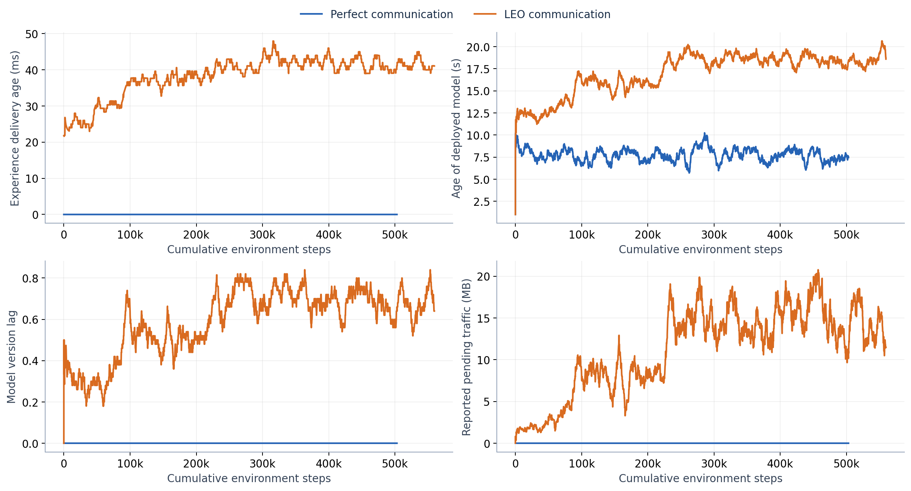
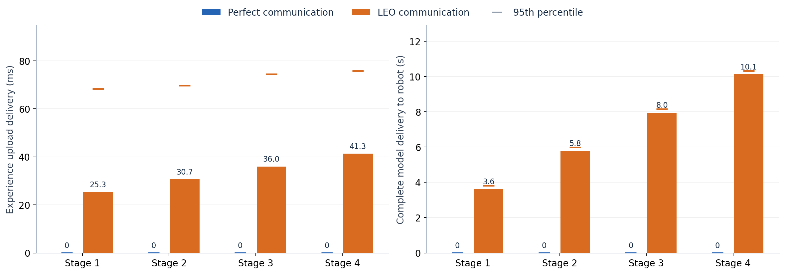

Recorded UAV travel over training and validation episodes. PDF · SVG

Seeded stratified recorded telemetry with a trailing 50-observation mean; deployed-model age includes the publication interval. Raw sampled values are in the CSV files. PDF · SVG

Mean complete-message delivery latency; horizontal ticks mark the 95th percentile. PDF · SVG
Single matched seed. Validation uses fresh communication. Recorded hours exclude infrastructure hangs and recovery downtime and include simulator overhead. See results.json for audit/provenance and CSV files for the numerical results.